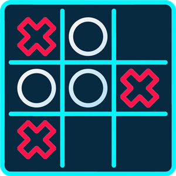

Loops and Loop Control#
A loop is an instruction that repeats multiple times (iterations) as long as some condition is met. There are two types of loops in Python:
forloopwhileloop
1. For Loop#
A for loop in Python is used to iterate over a sequence, e.g., list, tuple, set, dictionary, string.
Following is an example of For loop using a range object.
for i in range(5):
print(i)
0
1
2
3
4
Note
A range object starts at 0 and doesn’t include the upper number.
Therefore, range(5) would include the numbers 0, 1, 2, 3, 4.
Simliar to indexing of other data types, range can take two arguments
(starting and end index) and an additional “step” argument.
for i in range(1, 4):
print(i)
1
2
3
You can also convert range to a list object.
list(range(1, 10, 2))
[1, 3, 5, 7, 9]
list(range(10, 1, -1)) # notice the 2nd index is not included
[10, 9, 8, 7, 6, 5, 4, 3, 2]
Use for loop to calculate a sum.
# sum up value from 1 to 4.
total = 0
for i in range(4):
print("i is " + str(i))
total = total + i
print("sum is " + str(total))
print("program done.")
i is 0
sum is 0
i is 1
sum is 1
i is 2
sum is 3
i is 3
sum is 6
program done.
Note
“sum” is a reserved word in python. It is a function, so avoid using it for variable names.
Stay alert and memorize these reserved words as you learn Python
For loop with a list object
cities = ['Gainesville', 'Miami', 'Orlando', 'Tampa']
for city in cities:
print("I like " + city)
I like Gainesville
I like Miami
I like Orlando
I like Tampa
Tip
In the example above, city is just a pointer it can have any name as long as the name abides by the rules.
Try use for c in cities: or for _ in cities:.
2. While Loop#
While loops repeat (iterate) as long as a certain boolean condition is met (True).
Calculate the total sum from 1 to 100.
i = 1
total = 0
while i <= 100:
# print("i is " + str(i))
total = total + i
i += 1 # same as i = i + 1
print("Final sum is " + str(total))
Final sum is 5050
The while loop requires relevant variables to be ready, in this example we need to define an indexing variable, i, which we set to 1.
Warning
Remember to increment i, or else the loop will continue forever (infinite loop).
Because of how the two types of loops operate, while loop is more inclined to infinite loops.
Tip
The difference between for and while loops is whether the number of iteration is known. In for loops, you can pre-define a sequence over which the iteration loops through.
my_bool = True
while my_bool:
x = input("Please enter a number: ")
if x == "3":
my_bool = False
print("program finished.")
3. Guess a Randomly Generated Integer#
import random
Tip
The import statement is required to add more functions from modules or packages outside
of the builtins.
random is a module that implements pseudo-random number generators for various distributions.
Generate a random integer between 1 and 6.
x = random.randint(1, 6)
print(x)
1
Note
randint is a method belongs to the random module.
Unlike the range object, it includes both ends.
Tip
tabto autocomplete code.Shift + tabto view the documentation.
Tip
tabto autocomplete code.Shift + tabto view the documentation.
We can add a break to terminate a while loop prematurely.
x = random.randint(1, 6)
chance = 5
while chance > 0:
guess = int(input("Enter a number between 1 and 6: "))
chance -= 1
if x > guess:
print("Try larger.")
elif x < guess:
print("Try smaller.")
else:
print("Bingo!")
break
if chance > 0:
print(str(num_guess) + " more guesses left.")
else:
print("Sorry, no more guesses.")
4. Loop Control Statements#
Using loops in Python automates and repeats the tasks in an efficient manner. But sometimes, there may arise a condition where you want to (1) exit the loop completely, (2) skip an iteration, or (3) ignore that condition. These can be done by loop control statements.
Loop control statements change execution from its normal sequence. In Python, these statements include:
break,continue,path.
4.1 break statement#
The break statement is used to terminate the loop or statement in which it is present.
After that, the control will pass to the statements that are present after the break statement, if available.
import random
x = random.randint(1, 6)
# example of break statement (same script from last module)
num_guess = 3
while num_guess > 0:
guess = int(input("Enter a number between 1 and 6: "))
num_guess -= 1
if x > guess:
print("Try larger.")
elif x < guess:
print("Try smaller.")
else:
print("Bingo!")
break # using break to terminate the loop although num_guess > 0
if num_guess > 0:
print(str(num_guess) + " more guesses left.")
else:
print("Sorry, no more guesses.")
Note
When execution leaves a scope, all automatic objects that were created in that scope are destroyed.
If the break statement is present in the nested loop, then it terminates
only those loops which contains break statement.
{kind=link}

for x in range(3):
for y in range(3):
print(x, y)
0 0
0 1
0 2
1 0
1 1
1 2
2 0
2 1
2 2
The following code will skip row 2 (x == 1) completely.
When x is equal to 1, the break statement terminate the inner for loop,
but the outer for loop is not affected.
%%{init: {'theme':'forest'}}%%
flowchart TD
A[outer loop] -->|enter| B[inner loop]
B -->|enter| C{condition?}
C -->|True| D[`break` statement]
C -->|False| B
D -->|loop\ninner\nterminate| A
for x in range(3):
for y in range(3):
if x == 1:
break
print(x, y)
0 0
0 1
0 2
2 0
2 1
2 2
4.2 continue statement#
continue statement is opposite to that of break statement, instead of
terminating the loop, it forces to execute the next iteration of the loop.
The following example allows us to validate the input before evaluate the value of the input number.
num_guess = 3
while num_guess > 0:
guess = int(input("Enter a number between 1 and 6: "))
if guess > 6 or guess < 1:
print("Your input is out of range")
continue
num_guess -= 1
if x > guess:
hint = "Try larger. "
elif x < guess:
hint = "Try smaller. "
else:
print("Bingo!")
break
if num_guess > 0:
print(hint + str(num_guess) + " more guesses left.")
else:
print("You guessed wrong, no more guesses.")
4.3 pass statement#
The pass statement does nothing. It can be used when a statement is required syntactically but the program requires no action.
num_guess = 3
while num_guess > 0:
guess = int(input("Enter a number between 1 and 6: "))
num_guess -= 1
if guess > 6 or guess < 1:
print("Your input is out of range")
continue
else:
if x > guess:
hint = "Try larger. "
elif x < guess:
hint = "Try smaller. "
else:
print("Bingo!")
break
if num_guess > 0:
print(hint + str(num_guess) + " more guesses left.")
else:
pass
else: # else on exhaustion of loop
print("You guessed wrong, no more guesses.")
Note
Note the last else statement is in the same indentation level as the while statement.
This means that the else is only get executed after while loop exhausted.